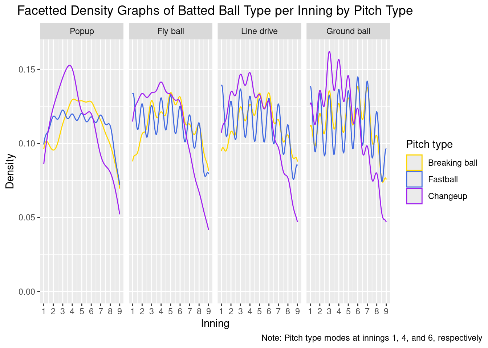

Baseball Analysis
Introduction
Baseball, the great American pastime, makes over ten billion dollars annually (Cohen 2024), draws millions to stadiums across the nation (ESPN 2023), and is played recreationally at parks and schools every day. After malding at the TV over terrible plays or inscrutable ball trajectories too many times, we decided it would be interesting to pick apart real professional league data to reveal more objective insights into this popular game.
Our dataset (jcraggy 2020) comes from a Kaggle model-creating competition to predict home runs. It has 46,244 observations that represent each batted ball from the 2020 MLB season (which was abbreviated due to COVID—the regular season included 60 games against 9 opponents instead of the typical 162 games against 19 or 20 opponents). The dataset also includes post-season games.
Each observation has twenty-five variables. We analyzed the subset below:
- inning: inning number within game
- outs_when_up: current number of outs
- is_pitcher_lefty: binary encoding of left-handed pitchers
- is_batter_lefty: binary encoding of left-handed batters
- pitch_name: name of pitch type thrown
- pitch_mph: speed of pitched ball (miles per hour)
- plate_x: ball position left (-) or right (+) of center plate (feet)
- plate_z: ball position above home plate (feet)
- launch_angle: vertical angle of ball leaving the bat (degrees relative to horizontal)
- bb_type: batted ball type classification
- bearing: horizontal direction classification of ball leaving the bat (i.e. ‘left’ ball is traveling to the left side of the field)
- is_home_run: binary encoding of home runs
Please note that there is a more extensive description of each variable in the appendix.
With these variables, we aimed to investigate anything that might help a team win a game of baseball, with special focus on ball bearing, inning number, launch angle, and hit location. In particular, we studied the relationship between each of these factors and player performance.
Results
Bearing
One facet of baseball is the bearing of a batted ball. Our dataset records balls as being hit into the left, center or right sides of the field. What informs where they might fall? We first investigate the left and right-handedness of batters and pitchers, because this variable is naturally associated with the left and right sides of play.
We note that in our data, 57.89% of batters are right-handed and 72.66% of pitchers are right-handed. We have a reasonably large sample of every subgroup.
We find that there is not much of a correlation between pitcher handedness and bearing—we may only say that right handed pitchers are more likely to serve balls hit to their right, onto the left side of the field. Batter handedness is more interesting. Right handed batters are more likely to hit balls to left field, and left handed batters are more likely to hit balls to center and right field.
This discrepancy might be justified by how far away pitchers are from the batter’s box. Any differences in angles caused by handedness might be normalized by the distance a ball has to travel. On the other hand, pitcher analysis might yield more insights after splitting the data more. That is, an analysis on bearing based on the four pitcher-batter combinations might give pitcher handedness meaning.
The batter handedness is the more interesting data. Because of how differently handed batters stand, we conclude that batters generally hit balls early rather than late, causing the balls to fly to opposite field. This has an impact on how teams should place players on the field to intercept balls.
We also want to know how pitch speed can correlate with bearing. We know from our above analysis that batter handedness correlates with significant differences in bearing, so we should facet this analysis over batter handedness as well. In summary, we plot pitch speed by bearing, faceted by the batter’s handedness.
Indeed, we see differences by batter handedness. For right handed batters, as pitch speed tends around the higher mode, the ball tends to go to right field. Also, as the pitch speed tends around the slower mode, the ball tends to go to left field. This is mirrored for left handed batters.
Since slower balls are correlated with opposite field and faster with same field, we can conclude that slower balls arrive to the bat earlier and are hit earlier, leading to landing in the batter’s opposite field. This systematic consistency in where balls land can again be used to place players on the field to intercept balls.
Inning
Nine innings in baseball seems like doing the same thing nine times, but pitchers and batters do not necessarily perform the same across each inning. Here, we investigate how the inning affects game performance. We use pitch type to focus on pitching and batted ball type to focus on batters.

This plot, facetted by batted ball type with separate lines for each pitch type, tells us which types of pitches are pitched at what point in the game, and the resultant type of ball. Fastballs are far more common towards the beginning of the game, usually hit into fly balls, line drives, or ground balls. More noticably, changeups are incredibly common in the third and fourth innings, usually the second time a batter is up to bat. As the starting pitcher is usually still on the mound, it indicates that they are varying the pitch they throw to their advantage, as it usually ends up in popups or ground balls. On the batting side, popups and ground balls tend to advance runners that have made it on base due to successful fly balls and line drives earlier on. Breaking balls begin to appear more often in the fifth and sixth innings. At this point, it may be a batter’s third time up to bat, so a new pitch type is ideal. On the other hand, this is when starting pitchers tend to tire out and throw slower pitches. There is also a spike in fastballs hit into ground balls in the sixth and seventh innings which may indicate when relief pitchers enter the game. At the eighth and ninth innings, there are far fewer pitches because of incomplete games due to weather or the home team winning, causing the bottom ninth inning to remain unplayed.
This analysis is informative to how inning affects game performance. Earlier on, pitchers can pitch straighter and with more speed, whereas in the late game, they need to think more strategically and use a greater variety of pitches. On the batting side, batters tend to prioritize getting on base with more powerful hits, then advancing their runners with sacrifice hits. Thus, we can see if there is a larger proportion of home runs around innings 3 to 5 where there is the greatest concentration of fly balls and line drives. We can also investigate the number of outs when a batter arrives at the plate to evaluate how pressure across innings affects game performance.
With this scatterplot, contrary to expectation, there does not appear to be a higher proportion of home runs from innings 3 to 5. Rather, in decreasing order, there appears to be a higher proportion of home runs with 1 out at inning 8, 1 out at inning 9, 0 outs at inning 6, 2 outs at inning 7, 1 out at inning 2, and 1 out at inning 4. The high proportions with 1 out at innings 8 and 9 seem to suggest that high pressure—the end of the game—improves batter performance. Nothing can be said for pitching performance from this graph.
Launch angle
Some variables we want to explore further are launch angle and pitch speed in relation to game performance. In this section, we ask if launch angle and pitch speed correlate with each other, and what ways do they affect if a batted ball was a home run?
To investigate these possible relationships, we first clean the baseball data to remove null values from pitch speed and launch angles. Then, we created a scatteplot between pitch speed (mph) and launch angles (degrees), colored by if a batted ball was a home run or not:
We can see that home run balls appear to occur across all pitch speeds, not limited to certain ranges, whereas launch angles distinctly appear to have a specific range of values where home runs occur. The blue and orange lines represent the median values of pitch speed and launch angles respectively for home runs. We can compare these values with the overall median values of all the batted balls below:
[1] 13[1] 89.8We see that the overall pitch speed median is extremely close to the median pitch speed for home runs, which makes sense since we did not find an obvious interval where home runs occur more for pitch speed. However, we find the value for overall median launch angle to be 13, which is much further than the median value of 28 for launch speed for home runs. Furthermore, a relatively horizontal linear trend indicates that pitch speed and launch angle do not seem to correlate with each other. As a result, we may want to dive deeper into the relationship between launch angles and home runs.
We can confirm whether launch angle is normal by looking at its Q-Q plot:
We find the the Q-Q plot for launch angles is S-shaped, and deviates at the ends of the line, which suggests heavy outliers that don’t conform to the normal distribution. As a result, we confirm that the distribution for launch angle is not normal.
Then, we cannot use a t test to check the mean values between overall batted balls and home run batted balls. However, since our sample size is so large, by the central limit theorem we can claim that the means will be approximately normal; then we can use a z test as opposed to a t test. Below we manually calculate the z test between home run launch angles and non-home run launch angles:
Two-sample z-Test
data: home_run_data$launch_angle and non_home_run_data$launch_angle
z = 84.986, p-value < 2.2e-16
alternative hypothesis: true difference in means is not equal to 0
95 percent confidence interval:
16.8978 17.6956
sample estimates:
mean of x mean of y
28.86091 11.56422 The results of the two-sample z-test here reveal a statistically significant difference in mean launch angles between home run and non-home run batted balls (p-value < 2.2e-16). Specifically, the mean launch angle for home runs is significantly higher than for non-home runs. This suggests that launch angle plays a critical role in determining whether a batted ball results in a home run. Therefore, we can conclude that launch angle is an important factor for predicting home run outcomes in baseball.
To further explore the relationship between launch angle and the likelihood of a home run, we can fit a logistic regression model. This model predicts the probability of a home run as a function of the launch angle, and it makes sense given home run is a binary variable. However, given that only a select portion of angles have home runs within them, we can consider a quadratic regression (the probability of home run increases, then decreases). Below are the summary for each regression model:
Call:
glm(formula = is_home_run ~ launch_angle, family = binomial,
data = pitch_data_filtered)
Coefficients:
Estimate Std. Error z value Pr(>|z|)
(Intercept) -2.622800 0.068893 -38.071 <2e-16 ***
launch_angle 0.020920 0.002249 9.303 <2e-16 ***
---
Signif. codes: 0 '***' 0.001 '**' 0.01 '*' 0.05 '.' 0.1 ' ' 1
(Dispersion parameter for binomial family taken to be 1)
Null deviance: 11306 on 15889 degrees of freedom
Residual deviance: 11220 on 15888 degrees of freedom
AIC: 11224
Number of Fisher Scoring iterations: 4
Call:
glm(formula = is_home_run ~ launch_angle + I(launch_angle^2),
family = binomial, data = pitch_data)
Coefficients:
Estimate Std. Error z value Pr(>|z|)
(Intercept) -1.787e+01 5.518e-01 -32.38 <2e-16 ***
launch_angle 1.153e+00 3.868e-02 29.80 <2e-16 ***
I(launch_angle^2) -1.949e-02 6.649e-04 -29.32 <2e-16 ***
---
Signif. codes: 0 '***' 0.001 '**' 0.01 '*' 0.05 '.' 0.1 ' ' 1
(Dispersion parameter for binomial family taken to be 1)
Null deviance: 14241 on 34458 degrees of freedom
Residual deviance: 9075 on 34456 degrees of freedom
AIC: 9081
Number of Fisher Scoring iterations: 12Comparing the two model’s AIC values, we determine that the quadratic mdoel is better as it has a lower AIC value. Now, we can graph the quadratic model probabilities:
From the graph above, we see that the relationship follows a bell-shaped curve, where the probability of hitting a home run increases up until about 30 degrees, and then decreases as the launch angle becomes higher. This suggests that there is an optimal launch angle range to hit a home run; a quadratic regression model explains this non-linear relationship well. We can also find the “best” angle according to this model by finding the peak value:
launch_angle
29.57494 So the best angle according to our model is 29.57494 degrees.
Hit location
In Baseball, batters at-bat stand beside the home plate, seeking to hit the pitched ball in order to score “runs.” Pitches can wildly differ in terms of behavior, varying in terms of speed and movement. One recorded metric for pitched balls is the point at which they cross the home plate. The position of a ball as it crosses the home plate is especially relevant for batters as it determines where they should swing their bats at. This is also relevant for pitchers, as these areas reflect areas that pitchers should avoid pitching toward to ensure minimized home runs for the opposing team. Thus, the question that we want to analyze is how certain plate positions of pitches affect batting performance.
Plate position can be defined in terms of two variables: plate_x and plate_z. Plate_x is the displacement away from the center of the home plate, and plate_z is the displacement above the plate. Both variables are in terms of feet. We wanted to learn where the most common plate locations were for pitches between hits that resulted in home runs compared to those that did not. Hence, the variables we seek to analyze are plate_x, plate_z, and is_home_run. We find the most common plate positions by utilizing a contour plot。
In this graph, a red line is added at plate_x = 0 in order to show if a pitch is centered or not. For pitches that resulted in home runs, there appears to be a singular mode within the data at around 0.0 feet for plate_x and around 2.2 for plate_z. However, among pitches that resulted in home runs, the results greatly differ. Like seen with the pitches that did not result in home runs, there also appears to be a singular mode within the data, but the density of the mode appears to be far greater. This is reflected within the lighter color of center of the mode, which indicates a greater density of points. Furthermore, unlike the mode for pitches that did not result in a home run, this mode appears to be off-center, as it is centered at around 0.05 feet for plate_x and 2.25 feet for plate_z. This is likely due to the prevalence of right-handed batters within the MLB. Namely, the sweet spot of the bat is off center and to the right for right-handed batters. Contact with the sweet spot is known to dramatically boost batting performance, which should indicate why the mode is off-center. There is also a small portion of the mode that stretches out left and upwards. This might be from home runs that are hit by left-handed batters.
We also wanted to find out how the height of a pitch might affect the batting performance of a batter. Batting performance can be described as variety of metrics that analyze how the ball comes off the bat. In this case, we seek to analyze the speed of balls that come off the bat. However, since higher pitch speeds are likely to result in higher launch speeds of balls, we must control for pitch speed. Thus, we create a new ratio variable called “sp_ratio” which is defined as launch speed/pitch speed. A higher sp_ratio means that the batter hit was more successful as they were able to put in more speed to their hit proportional to the pitch they were given, which means that it will likely be harder to catch in the outfield as well (and potentially result in a home run). We are also curious to see how this differs among left and right-handed batters. Thus, to analyze this, we utilize a scatterplot between pitch_z and sp_ratio, faceted by if the batter is lefty or not. We also add a linear regression trendline to visualize this relationship.
Firstly, we validate our desire to look into lefty and righty batters by analyzing if their distribution of plate_z is different to each other. To find out, we shall perform a two-sample Kolmogorov-Smirnov Test. In particular, we shall analyze if the distribution of pitch_z is the same among both.
Asymptotic two-sample Kolmogorov-Smirnov test
data: bb_data_lefty$plate_z and bb_data_righty$plate_z
D = 0.019483, p-value = 0.0167
alternative hypothesis: two-sidedSince the p-value of the Kolmogorov-Smirnov test is less than our alpha of 0.05, we have sufficient evidence to reject the null hypothesis. Therefore, we can conclude that the means are not equal. Thus, there might be a difference among lefty and righty batters in this regard. Thus, we proceed to our analyzed relationship of plate_z compared to sp_ratio below between lefty and righty batters.
There appears to be a weak negative correlation between the height of a pitch and the resulting speed ratio, indicating that this relationship appears to be the same for both lefty and righty batters. Moreover, the negative relationship appears to be slightly stronger for lefty batters as the Pearson correlation coefficient of -0.07285 has a larger magnitude than the Pearson correlation coefficient among righty batters of -0.05141, but to a nearly negligible degree. This suggests that higher pitches cause worse batting performance, which is likely due to the fact that it is harder for hitters to generate swing speed if the pitch is higher due to the characteristics of a baseball swing. Furthermore, the requirement that catchers be crouched is likely why the correlation coefficients are so low in this relationship. Regardless, pitchers could consider pitching slightly higher to limit batting performance of hitters, thus limiting the possibility of hard-to-get hits or home runs.
Discussion
From the second research question, we found that there was a relationship between inning and game performance. Moreover, we found that pitchers pitch straighter and with more speed the earlier the inning, which can be seen through the increase in the amount of fastballs in the beginning the game as shown by the first graphic relating to this question. However, in the late game, pitchers need to conserve energy, thinking strategically and utilizing more pitch variety, with changeups and breaking balls appearing more often in later innings. For batters, they prioritize powerful hits to get on base first, then follow that up with a sequence of sacrificial hits.
From our third research question, we found that pitch speed and launch angle did not correlate with each other, and that pitch speed and home runs did not seem to have a relationship. On the other hand, we found evidence through the scatterplot that launch angle and home runs were correlated. Comparing logistic and quadratic regression, we formed a quadratic relationship to predict home run probability from launch angles. By our model, an angle of about 30 degrees is most optimal, with close to a 30% chance of home run. This model is only generalizable between 10 and 50 degrees, since no home runs occur outside of those launch angles.
From our fourth research question, we found that home runs were consistently hit in specific locations, and that there was a very marginal negative correlation between plate_z and the speed ratio. Moreover, we also found the modes for the contour plot indicating highest density for home runs was slightly off-center with a portion of the mode stretching left and upwards. The off-centered nature of the mode among pitches resulting in home runs could potentially be due to the behavior of sweet spot contact in increasing the success of home runs and the prevalence of right-handed batters in the MLB. Furthermore, the portion of the mode that stretches left and upwards among pitches resulting in home runs could be due to left-handed pitchers and ball characteristics.
On the relationship between plate_z and the speed ratio, despite finding that the distributions of plate_z differed between left-handed and right-handed batters, we did not find a large difference in the relationship between plate_z and the speed ratio. This negative correlation could be due to the fact that it is harder to generate swing speed when balls are higher, thus generating less power to increase the launch speed and in turn the speed ratio. While our findings suggest that pitchers should pitch slightly higher to minimize resulting launch speed, pitchers also must be cognizant of their catchers who are mandated to stay crouched. Thus, we recommend a minute increase in the height of pitches.
Future Work
Bearing can be investigated further by consulting deeper knowledge in the sport of baseball, as well as analyzing more variables in more group. This is because different baseball techniques are likely to influence the data in ways that are hard to pick up in statistical analysis. Experienced pitchers might throw different types of pitches that are more likely to cause balls to go in different directions. Batters might bunt the ball or otherwise have techniques that cause balls to behave away from the norm. So, future work should consult those with more expertise in baseball itself, and simply run more analyses.
Future work regarding the relationship between inning and game performance should be focused toward finding out how park dimensions relate to inning and game performance, due to the fact that park dimensions can make home runs easier. We did not include this analysis due to the fact that we do not have the sufficient data to make this analysis, in addition to the fact that the only data on parks within this dataset comes from the United States.
Future directions regarding launch angles can be focused towards finding better models to predict home runs. Although we created two regression models, logistic and quadratic, we can try looking at other polynomial relationships and include other significant variables to create a more generalizable relationship to predict home runs. Additionally, we can relate launch angles to other variables other than home run for further analysis.
Future work on the relationship between where a pitched ball crosses the home plate and batting performance should be focused on the handedness of batters. Moreover, in both of the graphics relating to this question, we found that handedness had the potential to provide more information, but were unable to yield results due to lack of sufficient data. Future research could be done into park characteristics of more baseball fields, as the walls of some parks are shorter than others in certain regions. This relationship was not explored within the analysis due to the fact that we lacked sufficient data, as the dataset only included MLB parks. A critical first step in doing so would be to expand the dataset to include other nations that play frequent amounts of baseball, such as South Korea, Cuba, and Japan. Inclusion of such players could broaden our analysis and educate us on if our findings are exclusive to the MLB or more indicative of the sport of baseball as a whole.
Appendix
- inning: inning number within game; In a typical baseball game, there are 9 innings where the home team fields in the top-half-inning and bats in the bottom-half-inning. However, if the home team is winning at the middle of the 9th inning, then the bottom-half-inning is not played. This is why there are far fewer observations in the 9th inning. If the score is tied at the end of the 9th inning, then extra innings are played. This dataset includes observations up to the 13th inning.
- outs_when_up: current number of outs; There are three outs in each half-inning, so the number of outs when a batter is up to bat is expressed as 0, 1, or 2.
- is_pitcher_lefty: binary encoding of left-handed pitchers; A left-handed pitcher is expressed with a 1 while a right-handed pitcher is expressed with a 0. As the dataset includes unlabelled switch pitchers (such as Pat Venditte), their encoding is based on the particular pitch thrown.
- is_batter_lefty: binary encoding of left-handed batters; A left-handed batter is expressed with a 1 while a right-handed batter is expressed with a 0. As the dataset includes unlabelled switch hitters, their encoding is based on the particular pitch thrown. It is interesting to note that switch hitter Francisco Lindor batter opposite the pitcher, and all of his homeruns were scored as a lefty batter.
- pitch_name: name of pitch type thrown; This dataset includes 9 pitch types which were grouped into fastballs (4-seam fastball, cutter, forkball, sinker, split-finger), breaking balls (curveball, knuckle curve, slider), and changeups (changeup). In general, fastballs are fast and straight, breaking balls are slower and curve, and changeups are slower fastballs, so they drop more.
- pitch_mph: speed of pitched ball (miles per hour); Pitches in this dataset range from 70.0 to 102.8 mph. Pitch speed is heavily correlated with pitch type.
- plate_x: ball position left (-) or right (+) of center plate (feet); Horizontal ball position ranges from 2.06 feet left of center to 2.20 feet right of center.
- plate_z: ball position above home plate (feet); Vertical ball position ranges from -0.14 to 4.74 feet above the plate. We suspect the singular negative value is the result of an estimation error with a ball-tracking system such as Hawk-Eye.
- launch_speed: speed of ball leaving the bat (miles per hour); Batted ball launch speed is measured shortly after contact and ranges from 7.5 to 118.4 mph. We suspect the lower values are due to bunts or unfortunate fair tips.
- launch_angle: vertical angle of ball leaving the bat (degrees relative to horizontal); Batted ball launch angle ranges from -89 to 90 degrees from the horizontal.
- bb_type: batted ball type classification; This dataset includes 4 batted ball types: popups, fly balls, line drives, and ground balls. In general, popups pop up in the infield, fly balls fly into the outfield, line drives travel straighter and flatter, and ground balls are batted into the ground and bounce or roll. Batted ball type is heavily correlated with launch angle and whether or not a batted ball is a homerun.
- bearing: horizontal direction classification of ball leaving the bat (i.e. ‘left’ ball is traveling to the left side of the field); Bearing expresses whether a batted ball travels to the left, center, or right of the field. This is regardless of batter handedness.
- is_home_run: binary encoding of home runs; A home run is expressed as a 1 while a batted ball that is not a home run is expressed as a 0.

References
Cohen, Andrew. 2024. Heavy.com. https://heavy.com/sports/mlb/sets-revenue-record-11-6-billion/.
ESPN. 2023. “2023 MLB Attendance - Major League Baseball - ESPN.” ESPN.com. https://www.espn.com/mlb/attendance.
jcraggy. 2020. “Baseball.” Kaggle.com. https://www.kaggle.com/datasets/jcraggy/baseball?select=train.csv.